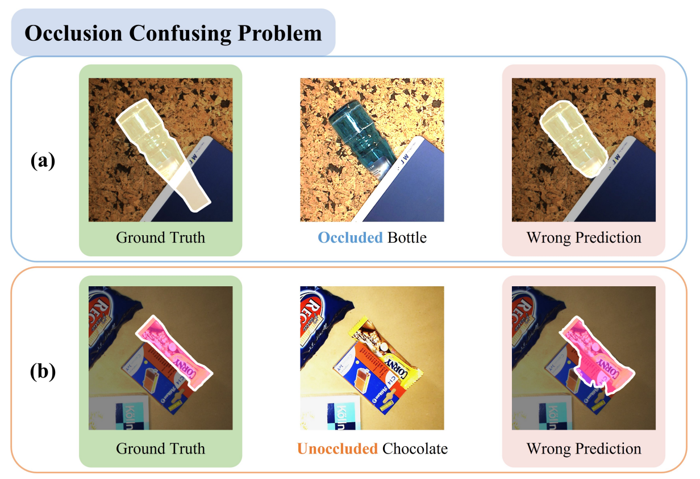
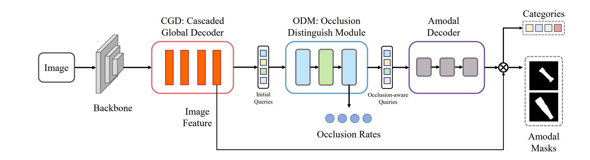
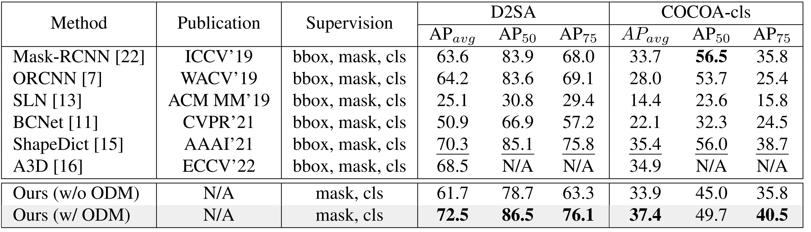

Abstract
Overview
The Amodal Instance Segmentation (AIS) task aims to infer the complete mask of occluded instance. Under many circumstances, existing methods treat occluded objects as unoccluded ones, and vice versa, leading to inaccurate predictions. This is because existing AIS methods do not explicitly utilize the occlusion rates of each object as supervision. However, occlusion information is critical for the methods to recognize whether the target objects are occluded. Hence we believe it is vital for the method to be distinguishable about the degree of occlusion for each instance. In this paper, a simple yet effective Occlusion-aware transformer-based model, OAFormer, is proposed for accurate amodal instance segmentation. The goal of OAFormer is to learn the occlusion discriminative features. Novel components are proposed to enable OAFormer to be occlusion distinguishable. We conduct extensive experiments on two challenging AIS datasets to evaluate the effectiveness of our method. OAFormer outperforms state-of-the-art methods by large margins.
01 · Figure
Typical cases of the occlusion confusing problem. (a) Occlude bottle is regarded as unoccluded and resulting in wrong prediction. (b) Unoccluded chocolate is regarded as occluded and predicted wrongly.

02 · Figure
The Proposed OAFormer Approach

03 · Figure
Experimental Results

Citation
BibTeX
@inproceedings{li2023oaformer,
title={{OAFormer}: Learning Occlusion Distinguishable Feature for Amodal Instance Segmentation},
author={Li, Zhixuan and Shi, Ruohua and Huang, Tiejun and Jiang, Tingting},
booktitle={International Conference on Acoustics, Speech, and Signal Processing},
pages={1--5},
year={2023}
}